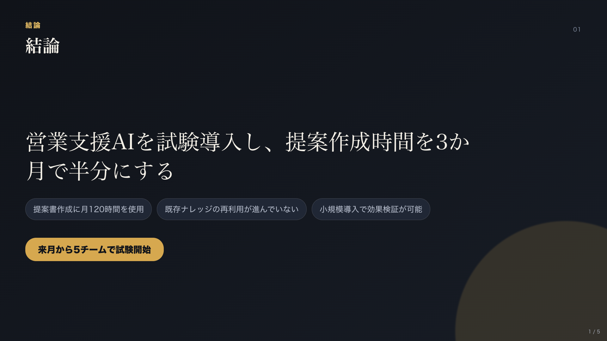
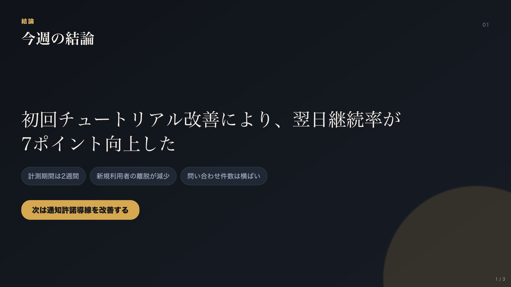
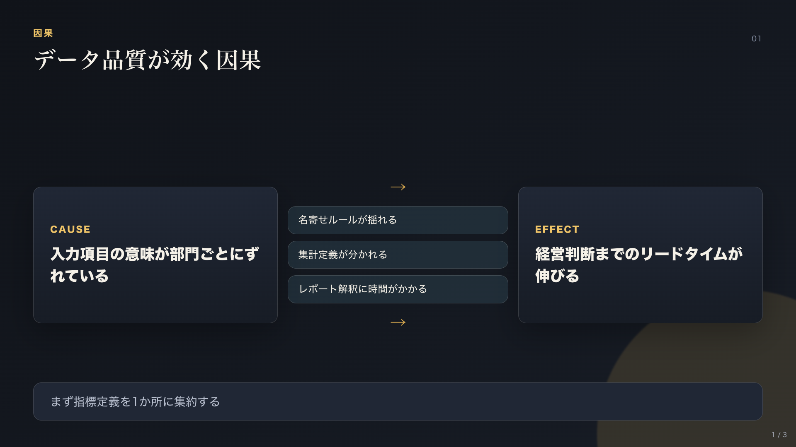

Urushi sample gallery
AI生成スライドの叩き台
Urushi のスキーマ駆動パイプラインで生成した静的サンプルです。ブラウザから Vertex AI を呼ぶ必要はなく、生成済みの1ファイルHTMLデッキを閲覧できます。


Urushi のスキーマ駆動パイプラインで生成した静的サンプルです。ブラウザから Vertex AI を呼ぶ必要はなく、生成済みの1ファイルHTMLデッキを閲覧できます。


